腾讯 WorkBuddy 生态发布会
参与腾讯 WorkBuddy 生态发布会传播物料的 创意策划与视觉执行，负责以下三部分工作。
项目由团队协作完成，本人承担其中创意与视觉部分的具体工作。
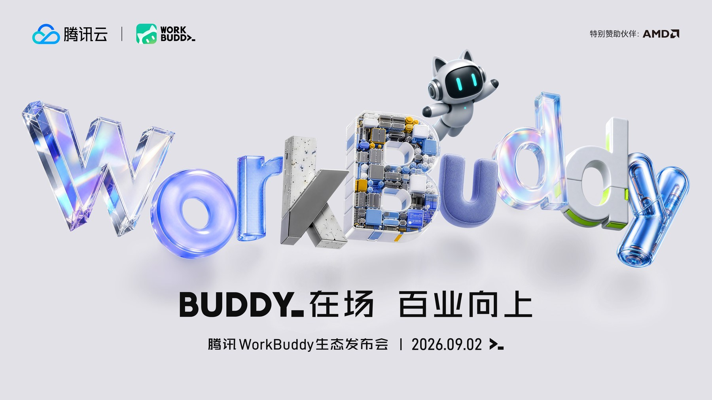
发布会主视觉，所有延伸物料的起点
这张主视觉确定了发布会的整体调性：浅色底、半透明玻璃质感、柔和的炫彩光效。 它不作为我们的产出，但它是后续全部物料的设计基准——倒计时海报、品牌方模版、 长图的配色与材质语言都从它延伸而来。
我们的产出
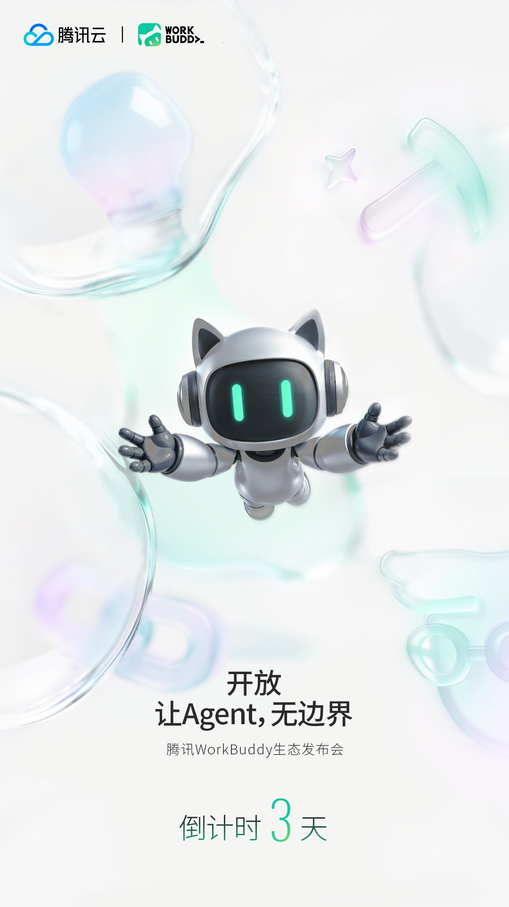
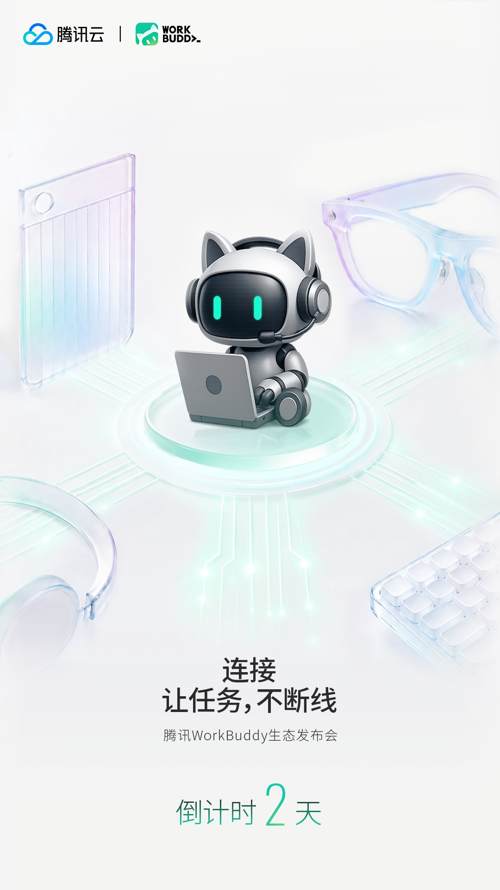
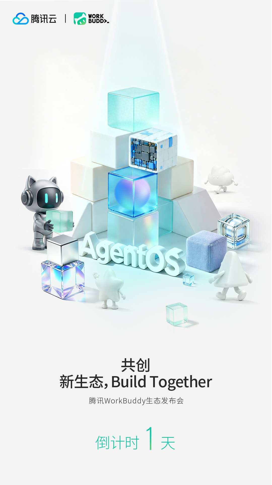
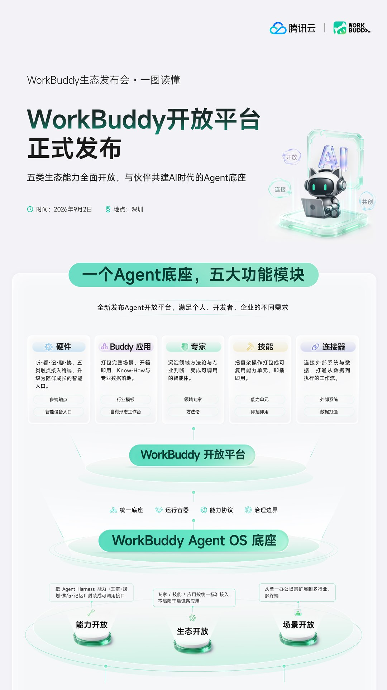
创意并非凭空而来。在动笔之前，我们先收集了过往发布会的主视觉与海报作为参考池， 供客户比对与选择，方向确定之后才进入深化迭代。
参考收集 → 客户选定 → 深化迭代
创意流程分三步推进，方向的决定权在客户方：
- 建立参考池 收集过往发布会的主视觉 Keynote 与系列海报， 按「视觉风格 / 材质语言 / 信息层级」分类整理，形成可供比对的参考集。
- 方向提案与选定 将参考集提交客户，逐一向客户说明各方向的视觉特征与适用场景。 客户最终选定玻璃炫彩光效方向——半透明玻璃材质 + 柔和的炫彩折射。
- 按方向深化 方向确定后才进入具体视觉深化：把玻璃质感落到 WorkBuddy 机器人主体、 生态元素与倒计时信息上，形成三张系列海报。
Brief 中的三条故事线
参考方向确定后，创意落到发布会自身的叙事上。倒计时 3 天对应三条故事线：
每条故事线落到具体的画面动作，并经历「初稿 → 修改 → 定稿」多轮打磨。 左右联动查看：切换天数看故事线与画面，滑动查看三个版本的演变。
开放 · 无边界
WorkBuddy 双臂展开向前遨游，身下地板随双手方向逐节点亮边界， 地板上铺开技能、专家、连接器、灵感案例等生态元素。
除官号发布的 3 张海报外，另产出供各生态伙伴自行填图的联合模版， 使 30+ 品牌方在统一视觉语言下同步发声。模版共提供两版方向供客户选择。
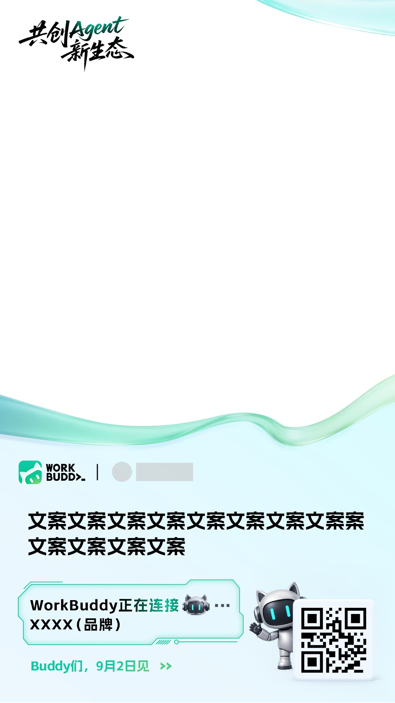
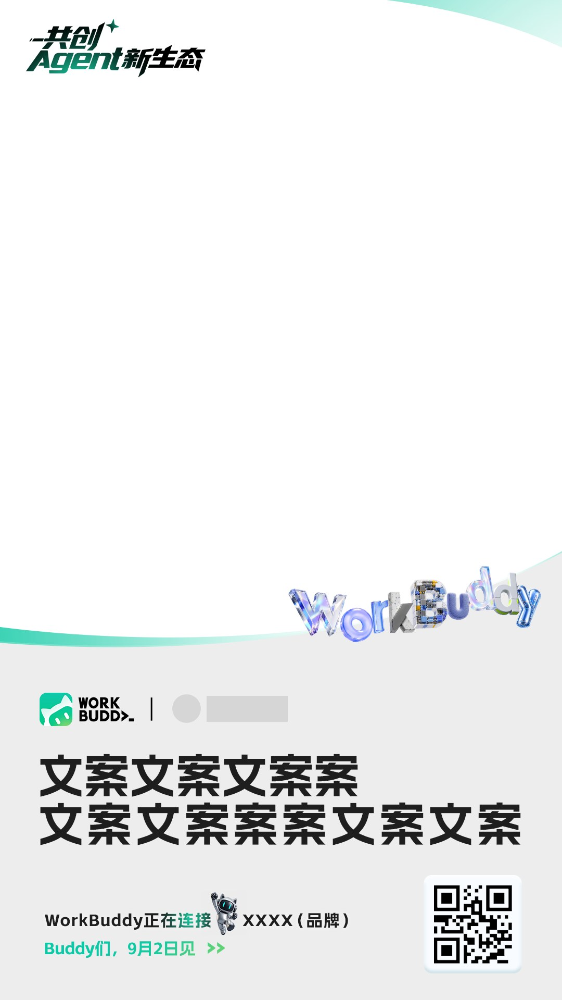
- 顶部主图区大面积留白，品牌方自行替换产品主图
- 品牌联合露出WorkBuddy logo 与品牌 logo 并列署名
- 文案位自定义文案，体现品牌自身产品特性
- 底部固定元素「WorkBuddy 正在连接 XX（品牌）」
「Buddy 们，9 月 2 日见」+ 直播二维码 - 视觉基底沿用发布会浅色 KV 的薄荷绿渐变与流线
将发布会全部信息浓缩为一张长图，用于会后传播与资料留档。 长图从初稿到定稿共经历六个版本，先与客户定框架，再逐版修改，最终定白底。 左侧逐版切换查看画面，右侧为设计思路。
设计思路
长图承担会后传播与资料留档两种用途，信息密度远高于海报。 因此采用「结构先行」的做法：先把信息层级搭清楚，再进入视觉填充， 避免边画边改结构导致返工。
结构上把发布会拆成五个信息层，由主到次纵向排布：
内容运营 · 微信小店 & 微信支付
微信小店日常营销项目下的公众号内容运营与视觉设计： 参与微信小店带货者助手的栏目视觉体系搭建、 封面与栏目标题条产出，以及图文长内容的视觉落地。
项目由团队协作完成，本人承担其中视觉设计与内容运营部分的具体工作。
微信小店带货者助手已发出的日常封面。每一条都对应一次具体的平台动作：功能上新、大促报名、激励活动。 统一用左文右图的横向版式，保证翻到账号列表时一眼认得出是同一个号。
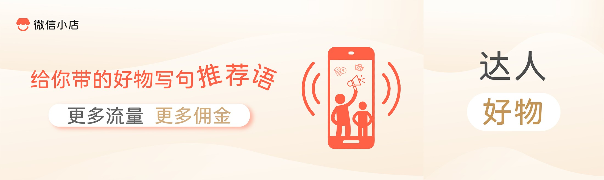
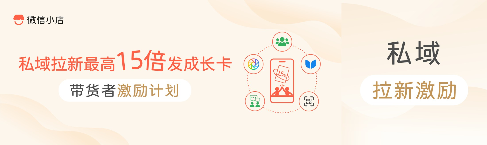
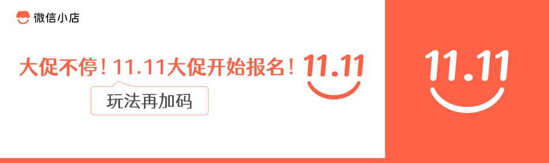
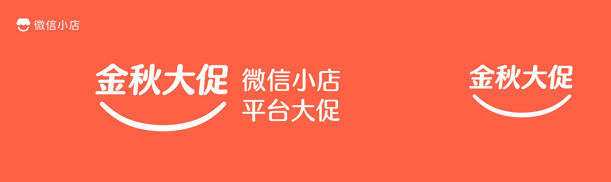
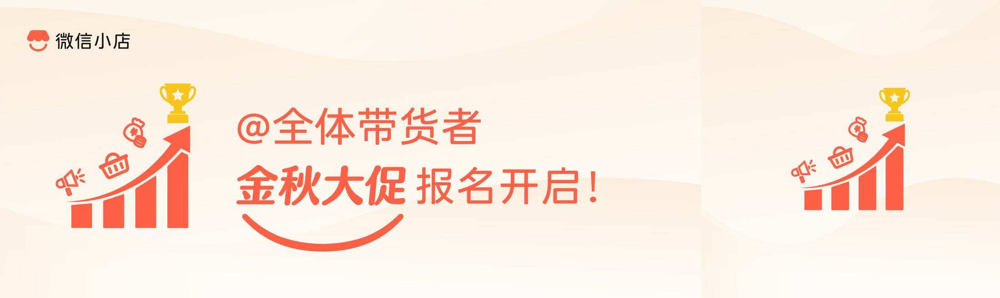
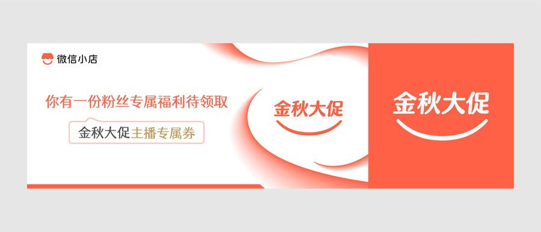
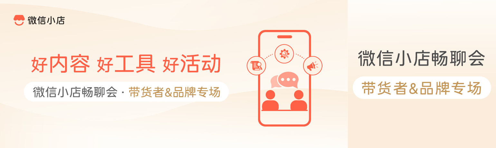
上面这些封面看着只是「一张横图」，其实每一条都由两张图组成。 这是我在定版式时反复改过的地方，也是整套视觉里最容易被忽略的一条规则。 两个官方账号共用这一套结构，只是配色各走一套。
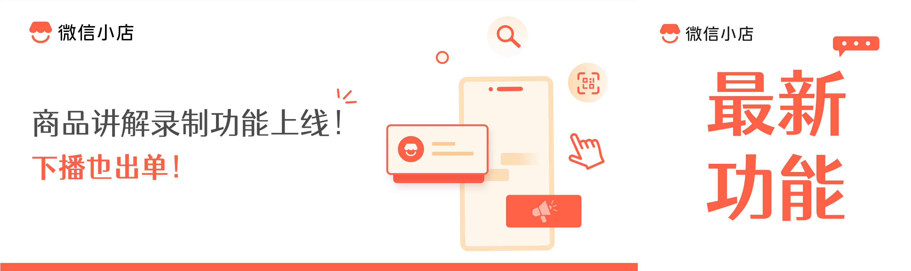
标题条是推文内的一、二级标题，起分段作用。规则是简单加小元素，不做重设计。 24 条标题条分四行横向循环，一三行向左、二四行向右，鼠标移上去会停。点击查看大图。
封面和标题条长什么样，取决于栏目先被怎么定。 每个栏目先定下色系和视觉关键词，再落到具体版式。 这条业务线的主色只有橙和白，靠明度与用量的差别区分栏目权重。
| 栏目 | 栏目内容 | 视觉关键词 |
|---|---|---|
| 看功能 | 介绍平台最新的带货功能 | 微信感、简约、短、干货 |
| 看规则 | 解读平台的重要规则 | 权威、清晰、可查 |
| 看案例 | 在微信小店带货的真实故事 | 人文感、真实 |
| 看激励 | 权益与激励活动的信息发布 | 权益感、直接 |
| 联盟商品快报 | 优选联盟热卖商品的趋势洞察 | 榜单、爆品、即时性 |
| 百万成长计划 | 帮助新人快速出单、成长 | 成长、温暖、向上 |
整条线的配色只有橙与白：日常栏目用白底橙边，权益类栏目用橙色实底，靠用量区分权重。
封面与标题条之外，还有三块成组产出。它们分属两个官方账号和一条并行线， 形式差别来自各自的读者不同，不是同一套东西的两种摆法。
小绿书 · 带货者 Q&A
问答形式的长图，把活动规则、报名路径与玩法拆成六个问题逐个讲清。 这是改版后唯一已上线的一批，橙色作为唯一强调色贯穿全篇。 六张按牌面叠放，当前这张在最前，切一张就把最前那张压回末尾。
服务商经营案例
面向服务商的故事型内容，按产业带分篇。 每篇两张图：大封面在信息流里把人拦下来，小封面用于转发分享。 青绿主色，与带货者助手的橙白拉开距离，一眼能分出是哪个号。
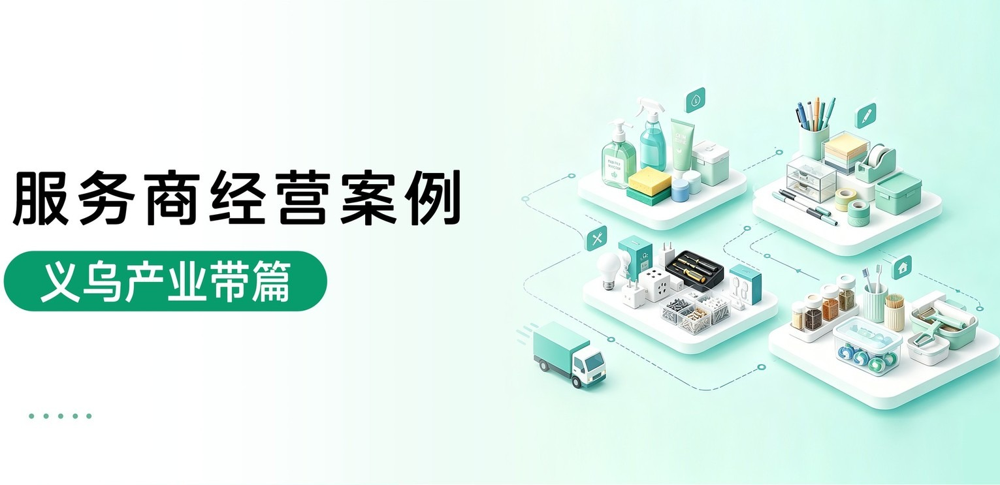
义乌 · 大封面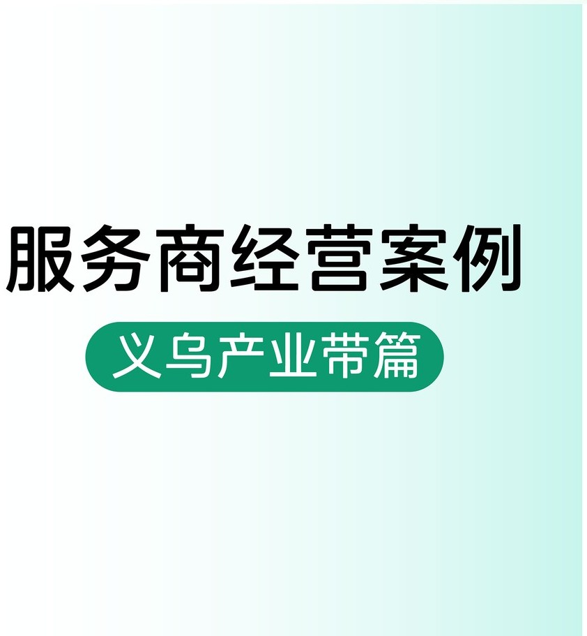
义乌 · 小封面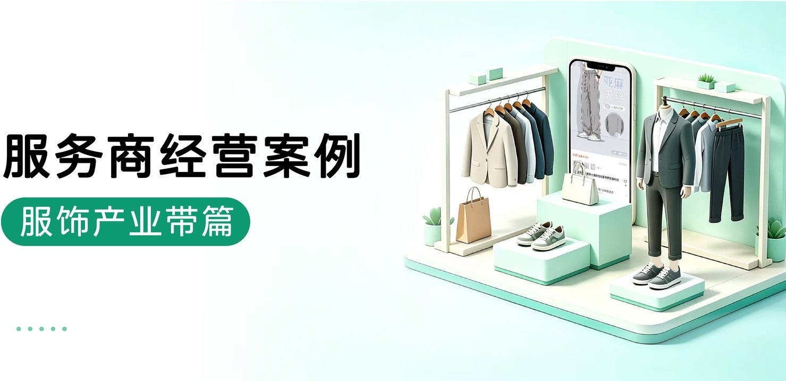
服饰 · 大封面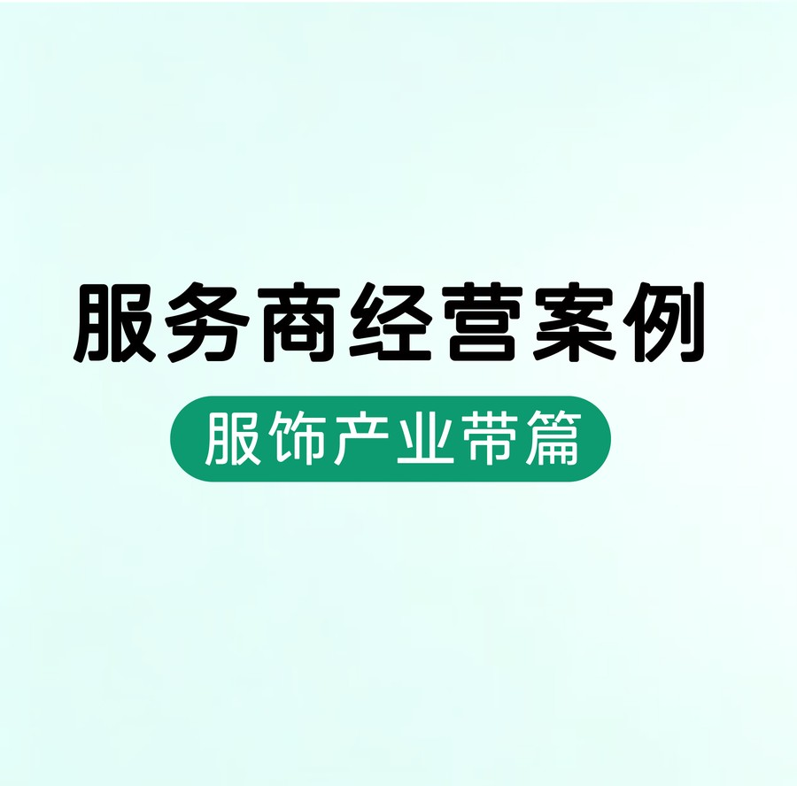
服饰 · 小封面封面与线下物料
和上面两个号并行的另一条线，产出封面素材与一套线下周边物料。
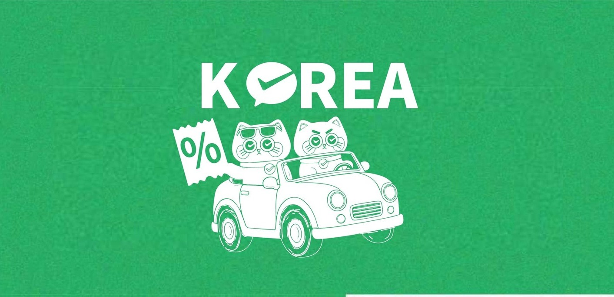
KOREA · 大封面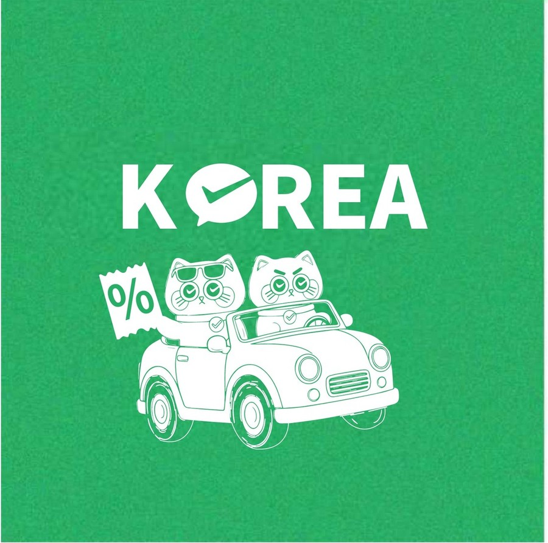
KOREA · 小封面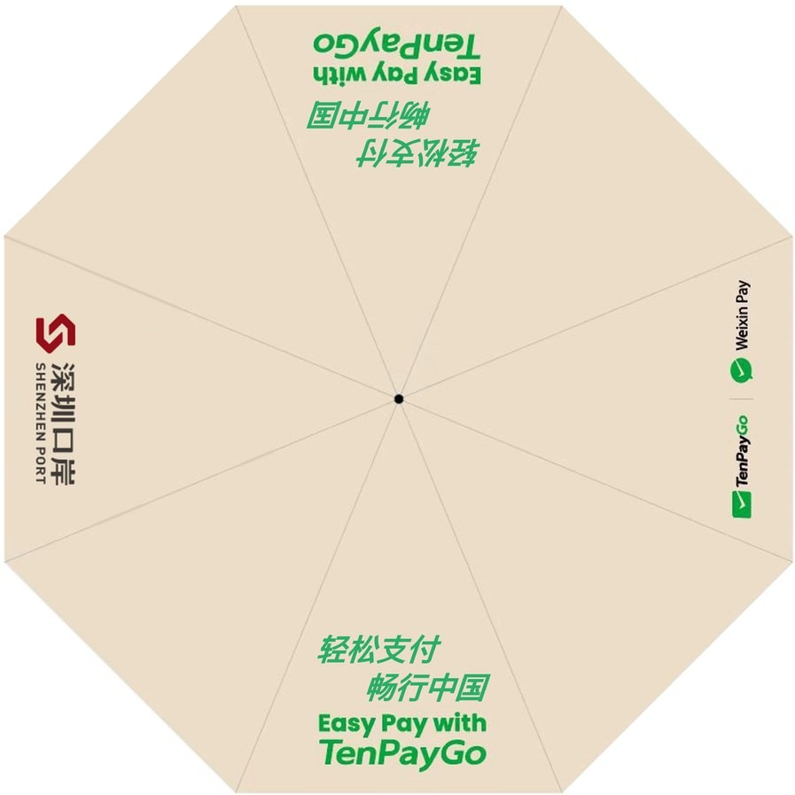
TenPayGo 雨伞TenPayGo 雨伞
伞面文案是 Easy Pay with TenPayGo · 畅行中国，配深圳口岸标识， 是这条线上的一套线下周边物料。